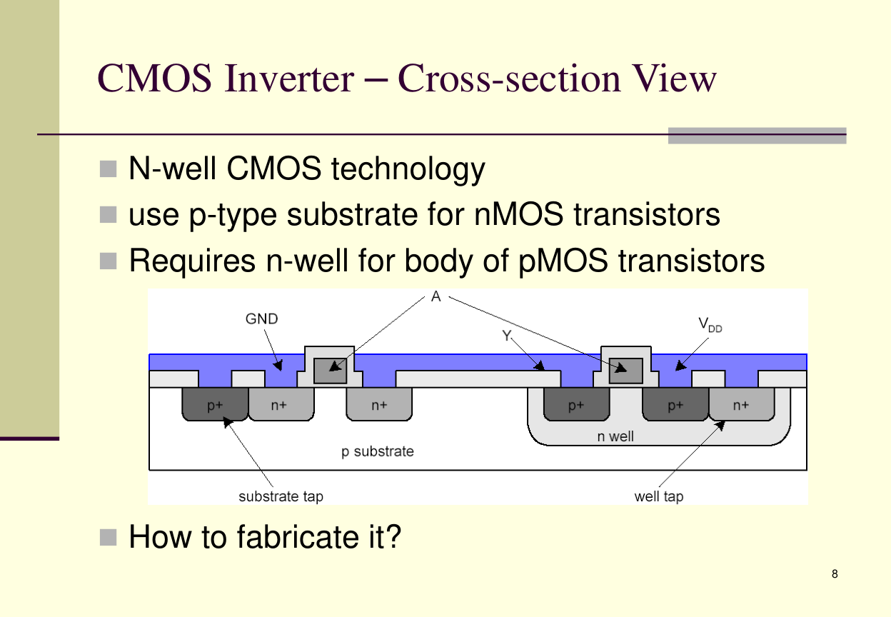
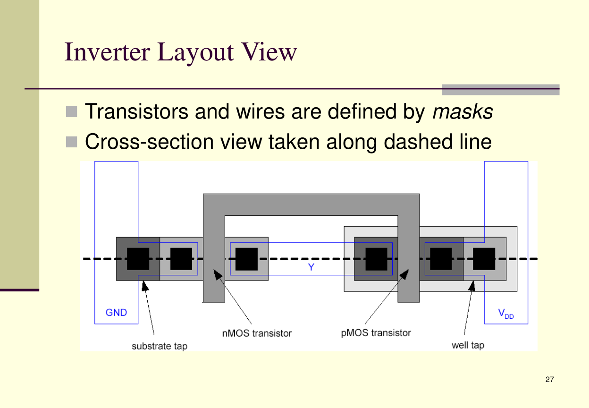
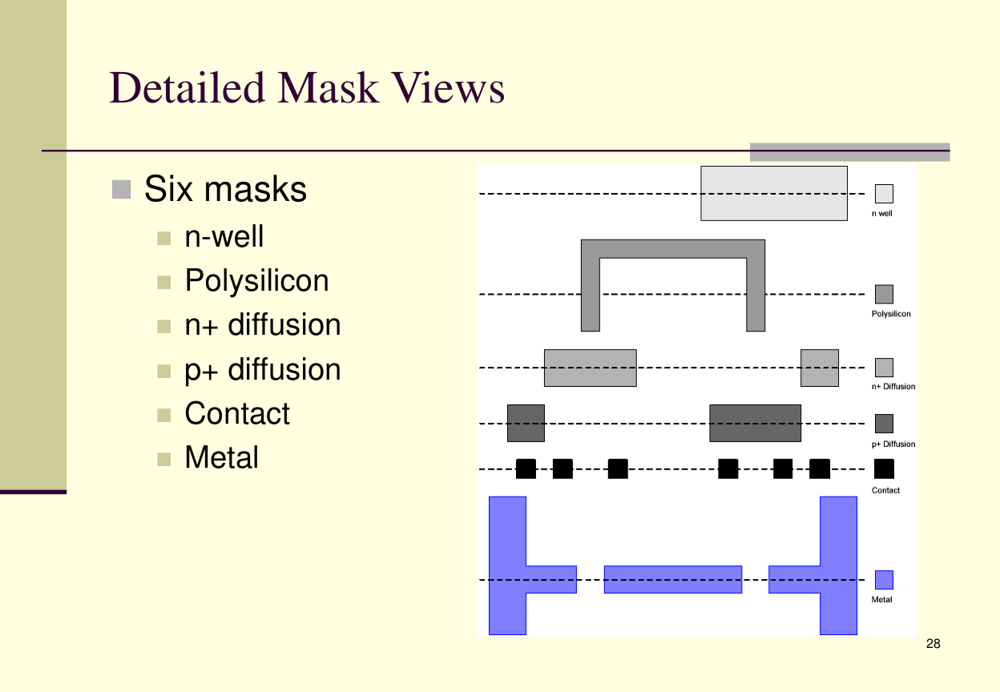
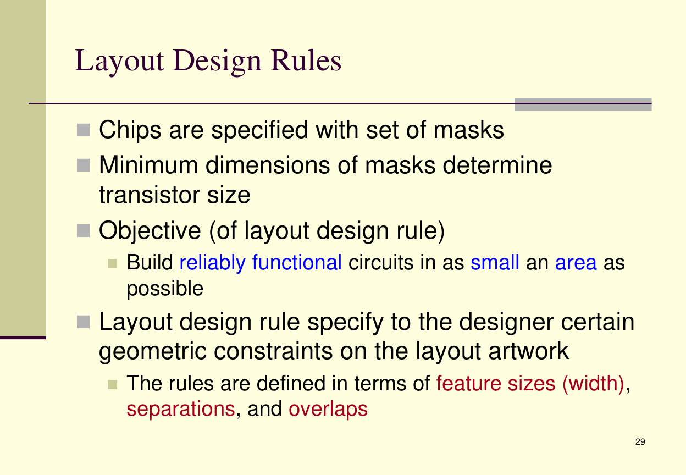
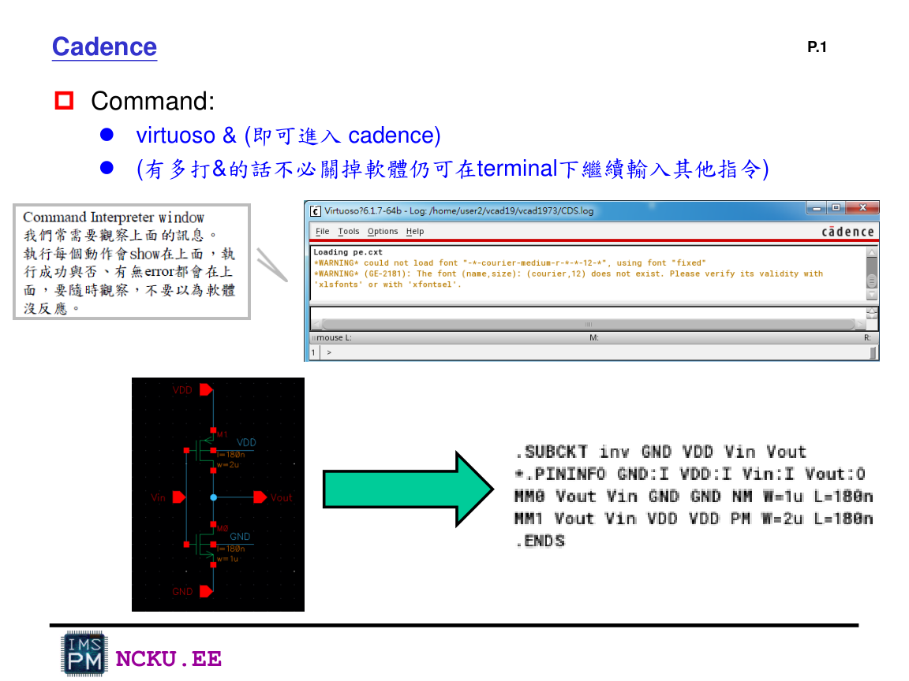
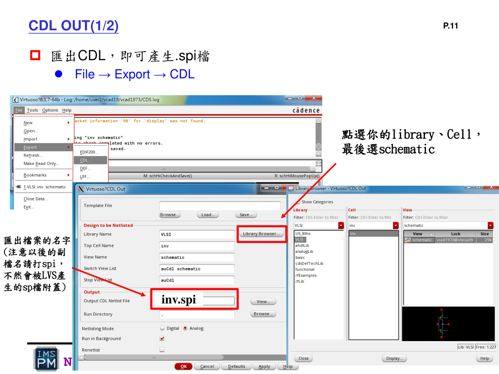
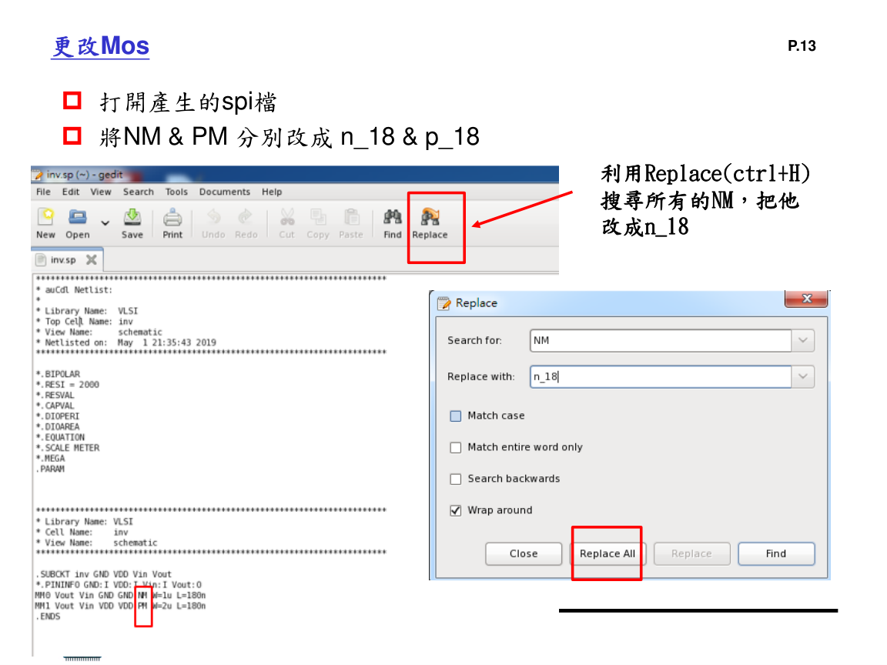
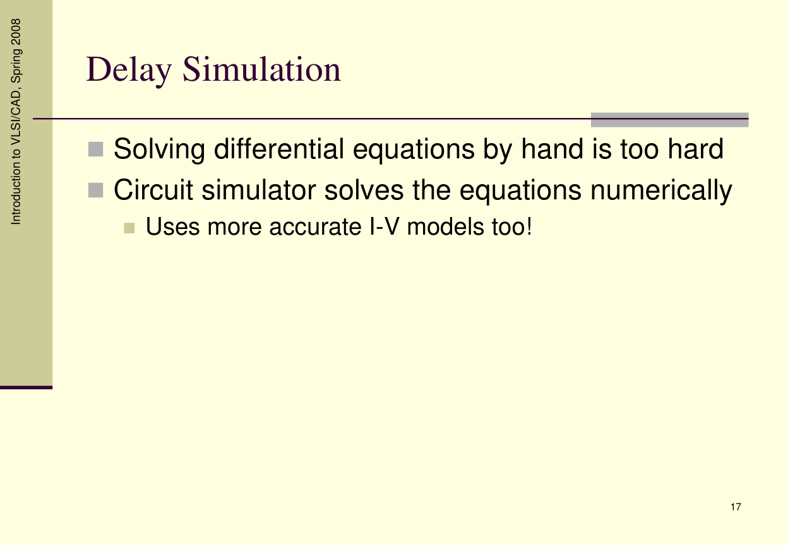

延伸圖片資料
這裡整理講義圖片，幫助理解 CMOS 製程、layout 以及 Virtuoso/CDL 概念。Lab8 本身主要是 HSPICE pre-simulation。
CMOS 與 Layout 背景

CMOS inverter cross-section：nMOS 在 p-substrate，pMOS 需要 n-well。

Inverter layout view：transistor 與 wire 由 mask 定義。

Detailed mask views：n-well、polysilicon、diffusion、contact、metal。

Layout design rules：寬度、間距、overlap 會限制 layout。
Virtuoso / CDL 延伸

Virtuoso command：
virtuoso &。
CDL out 可輸出 .spi 檔，後續 LVS 或模擬會用到。

輸出的 MOS model 名稱可能需改成 n_18 / p_18。

補充：rise time / fall time 的定義。